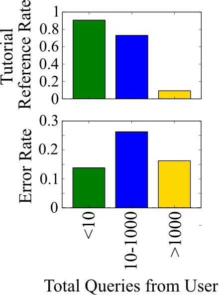
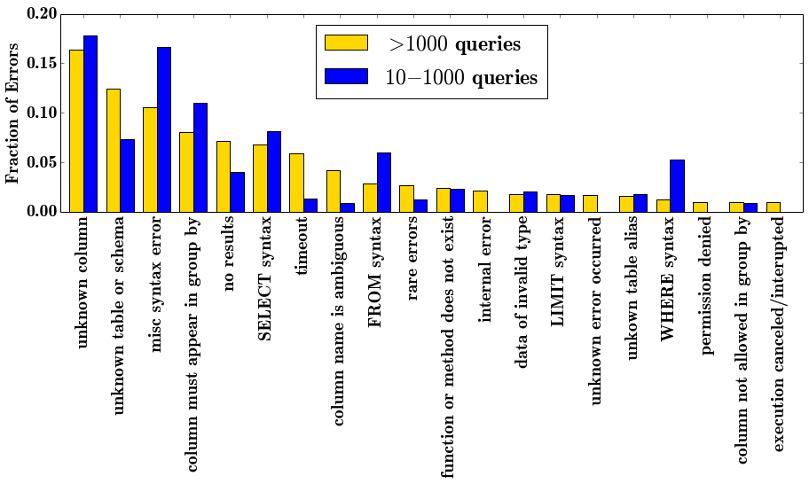
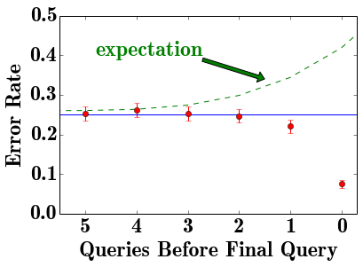
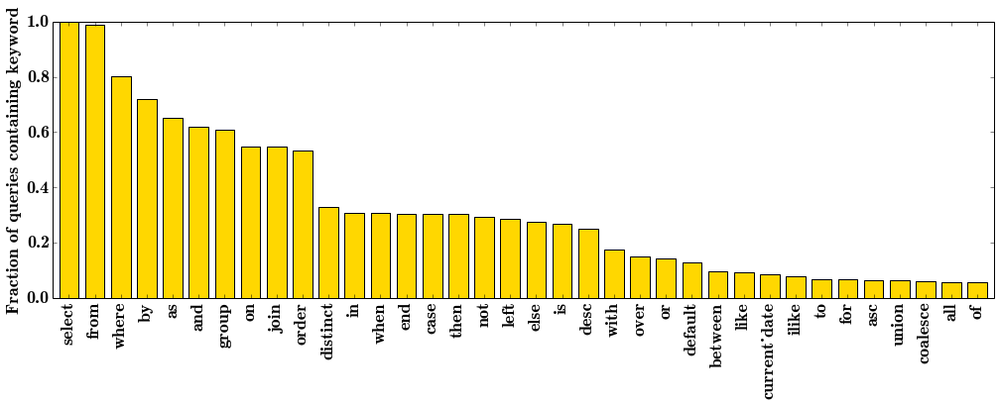

In this post, Dustin provides an overview of some of his work from his time in the Insight Data Science Fellowship program — work done in collaboration with Mode Analytics, an online collaborative SQL platform.
Insight Demo from Dustin McIntosh
Many high-value business insights have their answers rooted in data. Companies hire data analysts to extract these insights by dissecting their data, largely through querying databases with SQL (Structured Query Language).
However, data analysis can often be difficult. Mode Analytics is a company that aims to streamline the process of learning and engaging in data analysis with SQL, both for experts and novices alike. As an Insight Data Science Fellow, I have been working with Mode to help them analyze their users’ SQL code, mistakes and all, to identify opportunities for product improvement. Specifically, I’ve been trying to address the following questions:
- What types of SQL errors do users make? Do these vary with user ability level?
- Do early struggles dishearten beginners, hampering them from becoming power users?
- More generally, what characteristics differentiate the SQL queries of aspiring and expert analysts?
- Given answers to these questions, how can Mode modify their product to make analysis easier for their users?
My analysis uncovered a number of actionable insights for Mode:
- Mostly, analysts make the same sorts of errors regardless of their ability level. The good news is that many of these errors are avoidable: Mode can help.
- Novice users actually do not seem to churn due to frustration with errors. It’s more likely that they leave due simply to having completed the tutorials - Mode can increase user retention by proactively encouraging users to upload and interact with their own private data after finishing the tutorials.
- Mode can customize the user experience soon after a user joins the site in order to better serve users based on their SQL skills. To this end, I built a model to classify users as experts or novices based on the content of their queries. This model reveals that experts take extra care in the formatting of their queries, implying an advanced knowledge of the SQL structure that could be emphasized in the tutorials.
WHAT IS MODE AND WHO ARE THEIR USERS?
Mode Analytics provides a one-stop shop for all the needs of a data analyst. Users can easily connect their data to Mode’s web-based app, query it with SQL, and create and share visualizations of their analysis to convey the insights they’ve extracted. In addition, Mode offers free instruction via their SQL school, which instructs novices on the basics of SQL while querying some public, tutorial datasets.

With the goal of cohorting users based on their ability level, I group users based on the number of queries they have submitted to Mode (see plot at right of tutorial reference rate and error rate by cohort):
{kind=link}
- Power users (1000 + queries): this group primarily queries private data sources with no need for the tutorials, making only occasional errors.
- Novices (10-1000 queries): the majority of these users are heavily invested in the tutorials and are making a lot more errors than the experts as they learn.
- Infrequent queriers (<10 queries): these users have only visited Mode’s website long enough to make a few queries - most of which are easy tutorial exercises on which they are making very few errors.
The demarcations at 10 and 1000 queries are somewhat arbitrary at this point. Undoubtedly, there are many experts hidden in the 10-1000 category who already possess advanced SQL knowledge, but are yet to extensively use Mode’s platform for their analysis. As we will see, we can build a model to distinguish these users based on the content of their queries rather than their query count.
The primary goal, from a business perspective, is to move users up this list: get infrequent queriers invested in the product and get novice tutorial users up to speed with SQL so they can enjoy all aspects of Mode’s product. For the remainder of the post, I ignore the infrequent queriers [1] in favor of analyzing novices and the differences between them and the experts.
WHAT ERRORS DO SQL USERS MAKE?
SQL is a very simple language. With a simple, declarative style and only about 200 keywords in total, of which only a few dozen are in common usage [2], there is very little to memorize for SQL users. Thus, most errors should be recognizable and avoidable in product design. Examining the types of errors SQL users make informs us how we can make an analyst’s experience better through the Mode platform. In the plot below, I count the number of each type of error made by the two cohorts (experts and novices).

{kind=link}
The most striking thing about this analysis is that the two most common error types are forgetting and/or misspelling table and column names. Fortunately, these errors are easily addressed through product design: simply prominently displaying the table/column names may significantly reduce errors. It may even be possible in some instances to auto-fill the names.
There are a few subtle differences between expert and novice errors worth noting. Novice users tend to make more syntax errors, which is not a surprise given they are less familiar with the language. Power users, on the other hand, make a broader distribution of errors (e.g., a lot more rare errors). Further, experts much more frequently run into the limits of the system (e.g., timeouts, internal errors), an indication that they are running more complex queries. From a product perspective, correcting errors for novices is the priority as they make the most errors and are less likely to know how to correct them. Further, as novices tend to make a narrower range of errors, it is likely possible to parse out many of these errors and either auto-correct them or provide more personalized help to the user than the standard SQL error messages.
DO NOVICES GET FRUSTRATED AND QUIT?
A principal concern for educating the novice users is that they may consistently run into certain types of errors, not understand how to correct them, and quit out of frustration. Should Mode customize the standard error messages to better direct novices to their problems? To see whether or not this is the case, I looked at the set of churned novice users (those that have not made a query since November) and examined their final few queries. If user frustration is causing churn, we expect the error rate to increase as the users approach churn.

{kind=link}
Surprisingly, the rate at which users commit errors before they churn is actually lower than the group’s average error rate and decreases until they churn. Thus, we can infer that the average novice does not quit due to frustration with errors they are making - this is not a major concern for customer retention.
However, Mode could be more proactive about transitioning customers from their SQL school to connecting their own data and using their visualization tools. 88% of users that churn have not connected their own data sources and are working exclusively on the tutorial datasets. One potential product enhancement is to periodically remind tutorial users of the possibility of connecting their own data and to add tutorial exercises introducing the visualization tools.
WHAT’S IN A SQL EXPERT’S QUERY?
As discussed above, drawing a line at 1000 queries is not a very useful classification metric for experts versus novices. There are many experts that come to Mode with a lot of expertise in SQL, but have not made 1000 queries yet. Thus, I developed a model based on a Random Forest classifier to differentiate expert and novice SQL users based on the content of their queries [3]. This model accurately classifies users based on a single query roughly 65% of the time for both classes. Accuracy of the prediction will go up the more unique queries a user submits; for example, after ten queries accuracy may be as high as 90% [4].
{kind=link}
One interesting aspect of the Random Forest model is that it determines the most important features that define an expert’s query from a novice’s. The result is clear: Of the top five most important features, three of them have to do with formatting; experts take more care in their use of white space, line breaks, and parentheses. In particular, in their queries, experts have a higher density of white space, a lower density of line breaks, and a higher density of parentheses. Thus, experts tend to have longer lines of code with more white space. The two remaining features in the top five, query length and frequency of “select” and “from”, indicate that experts tend to write longer queries with more subqueries.
Being able to classify a user as an expert or novice based on the content of their queries would be extremely useful for personalizing user experience. If a user connects their data early on and it becomes clear that they have limited experience with SQL, Mode would like to be able to direct those users to relevant tutorials or perhaps to work related to theirs that was performed by experts. Likewise, if a user immediately demonstrates advanced SQL knowledge, Mode would like to direct them to, for example, the data visualization tools that make Mode’s platform uniquely useful to the experienced analyst. Implementation of my model would permit this.
CONCLUSIONS
This analysis provides a number of actionable insights for Mode in serving their user base:
- Everyone using the platform is affected by errors relating to misspelling or altogether forgetting the names of the tables and their contained fields in their databases. Implementing an auto-complete of these names or prominently displaying them for the user could considerably reduce the number of errors encountered on Mode.
- Most users that churn are not leaving out of frustration with the errors they are making. The vast majority of churning users, however, are exclusively querying tutorial datasets. Mode can try to get tutorial users more invested in their product by prompting them to connect their data periodically throughout the tutorial.
- In addition to tutorial-using novices and the true SQL experts, Mode has a third class of users. Their query history does not reveal much about them: they only visit Mode briefly, submitting just a few tutorial exercises without making many errors. Looking into who these visitors are via, for example, google analytics data, may provide insight into how to retain these potential users.
- User ability level can be determined based on the content of their first several queries to Mode. This is useful as Mode can effectively personalize response to users as they join the platform.
FOOTNOTES
[1] The query history of the infrequent queriers does not provide very much information as to who these users are. Gathering additional information on these users may prove useful in determining how to retain these customers.
[2] Top-Heavy Nature of SQL -Of the approximately 200 keywords in the SQL vocabulary, a very small subset are even remotely common. Looking at the fraction of queries containing each keyword from the expert dataset demonstrates just how top heavy the language is. Each keyword not present on this plot appears in fewer than 4% of all unique queries in the dataset.
[3] Labeling the Training Set -I define users with >1000 queries as experts and take only a subset of their most recent queries (those submitted since November 2014) - assuming that they have become better queriers with time. For the novice training set, it is not possible to strictly take the users from the 10-1000 query group as there are likely some new-comer experts in that category (experienced SQL users that have just recently joined Mode). Instead, I took only users with 100-1000 queries that had participated extensively in the tutorials. I then remove those tutorial queries from their set and label those remaining as novice queries for training.
Feature Selection/Engineering- I use a bag-of-words approach with language defined by SQL’s keywords. Additional features include query length, number of unique keywords in the query (diversity), as well as fraction of the query that is white space, line breaks, and parentheses. Several keywords are strongly correlated with one another; for this reason, I combine some together (e.g., “select” and “from”) and remove others from the analysis entirely (e.g., “as”, “by” and “on”).
{kind=link}
[4]Growing confidence of classification -If a user’s successive queries were independent of one another we would expect confidence in the prediction to grow in accordance with a binomial distribution: \(P(\)misclassify\() = \sum_{i = 0}^{\lfloor n/2 \rfloor} \binom{n}{i} p^i (1-p)^{n-i}\) with \(p \approx 0.65\) and \(n\) the number of queries. After ten queries the misclassification error reduces to roughly 10%; after 20 queries - 5%. However, a user’s queries are typically not independent of one another, so this is likely a generous estimate.
 Dustin got a B.S in Engineering Physics from the Colorado School of Mines (Golden, CO) before moving to UC Santa Barbara for graduate school. There he became interested in Soft Condensed Matter Physics and Polymer Physics, studying the interaction between single DNA molecules and salt ions. After a brief postdoc at UC San Diego studying the physics of bacterial growth, Dustin decided to move into the data science business for good - he is now a Quantitative Analyst at Google in Mountain View.
Dustin got a B.S in Engineering Physics from the Colorado School of Mines (Golden, CO) before moving to UC Santa Barbara for graduate school. There he became interested in Soft Condensed Matter Physics and Polymer Physics, studying the interaction between single DNA molecules and salt ions. After a brief postdoc at UC San Diego studying the physics of bacterial growth, Dustin decided to move into the data science business for good - he is now a Quantitative Analyst at Google in Mountain View.